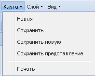
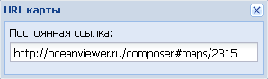
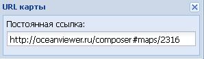
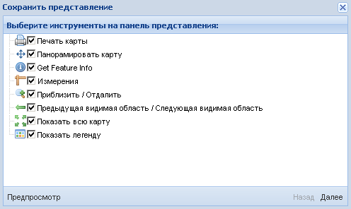
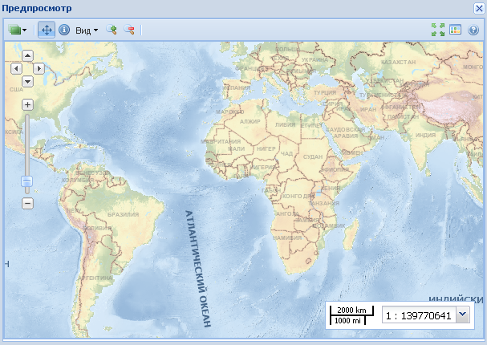
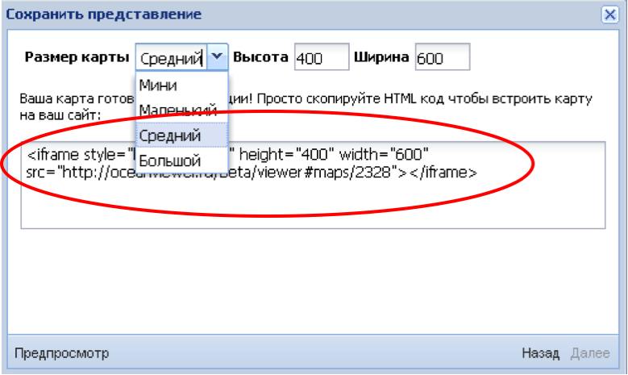

Карта
Команды меню Карта позволяют открывать новые карты, сохранять пользовательские карты (Далее - проекты). Команды открываются в ниспадающем списке при нажатии левой кнопкой мыши на название меню или на пиктограмму .

Команда Новая очищает рабочее окно от предыдущего проекта и начинает новый проект с картоосновы по умолчанию (отображается картографическая основа ЭКО 3.1). Команда Сохранить позволяет сохранять текущий проект карты под определенным URL-адресом. При выборе этой команды приложение выводит на экран окно URL карты, в котором автоматически сформирован адрес постоянной ссылки сохраняемого проекта. Пользователю необходимо запомнить этот адрес для последующей загрузки своего проекта. Сформированную ссылку также можно передавать другим пользователям по email или любым другим удобным способом.

Команда Сохранить новую сохраняет текущий проект карты под новым именем. При нажатии на кнопку появляется окно, в котором приложение автоматически устанавливает новый URL-адрес проекта.

Команда Сохранить представление сохраняет текущий проект карты с для ее использования в любой веб-странице (блог, сообщение на форуме и т.д.). При выборе этой команды приложение откроет дополнительное окно Сохранить представление, в котором пользователь может отобрать необходимые инструменты на панель представления для веб-страницы, оставив галочки на нужных для работы с конкретным проектом инструментах и убрав галочки с ненужных.

Опция Предпросмотр позволяет просмотреть сохраняемое изображение проекта пользователя в дополнительном окне Предпросмотр. После этого окно можно закрыть.

Опция Далее дает возможность регулировать размер сохраняемой карты. Это можно сделать, выбрав заданный размер из ниспадающего списка (Мини, Маленький, Средний, Большой) или задать самостоятельно произвольные высоту и ширину карты. В этом же окне можно получить HTML код, позволяющий вставить интерфейс карты в любую веб-страницу.

Выставив нужный размер карты, ее снова можно предварительно посмотреть с помощью опции Предпросмотр.